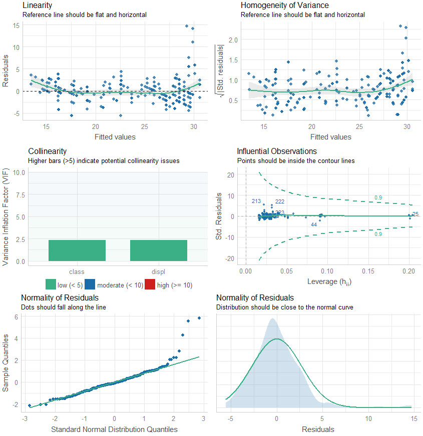
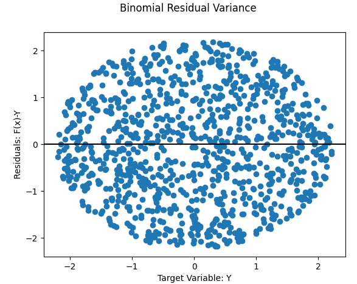
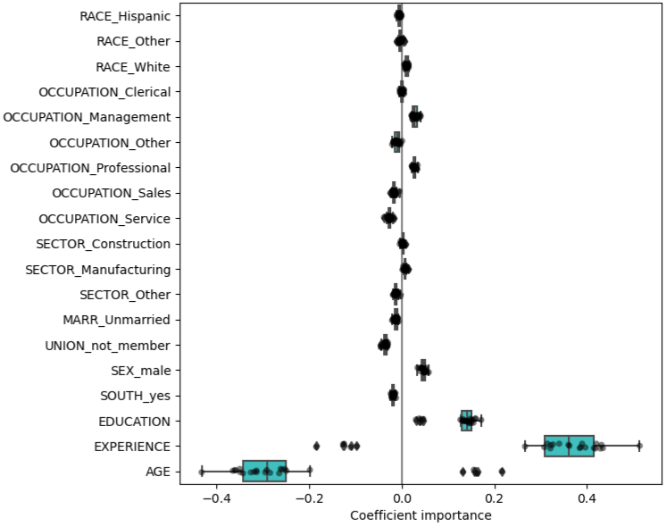
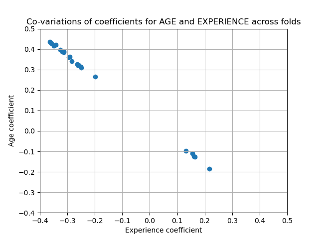

Regression
Misc
- Collinearity - Umbrella term encompassing any linear association between variables.
- Hat Matrix (AKA Projection Matrix or Influence Matrix) - The matrix that maps the data, \(y\), to the model predictions, \(\hat y\) (i.e. puts “hats” on the predictions). In \(y = A \hat y\), \(A\) is the hat matrix. (source)
- Multicollinearity - Specific type of collinearity where the linear relationship is particularly strong and involves multiple variables.
GOF
{performance}
- Handles all kinds of models including mixed models, bayesian models, econometric models
performance::check_model
- Can take a tidymodel as input.
performance::model_performance- Scores model using AIC, AICc, BIC, R2, R2adj, RMSE, Sigma
- “Sigma” is the standard deviation of the residuals (aka Residual standard error, see below)
- Scores model using AIC, AICc, BIC, R2, R2adj, RMSE, Sigma
performance::compare_performance- Outputs table with scores for each model
{kind=link}
summary
See Matrix Algebra for Educational Scientists Ch. 29.5 and Ch. 29.6 for details on how these values are calculated
Standard Errors: An estimate of how much estimates would ‘bounce around’ from sample to sample, if we were to repeat this process over and over and over again.
- More specifically, it is an estimate of the standard deviation of the sampling distribution of the estimate.
t-score: Ratio of parameter estimate and its SE
- Used for hypothesis testing, specifically to test whether the parameter estimate is ‘significantly’ different from 0.
p-value: The probability of finding an estimated value that is as far or further from 0, if the null hypothesis were true.
- Note that if the null hypothesis is not true, it is not clear that this value is telling us anything meaningful at all.
F-statistic: This “simultaneous” test checks to see if the model as a whole predicts the response variable better than that of the intercept only (a.k.a. mean) model.
- i.e. Whether or not all the coefficient estimates should jointly be considered unable to be differentiated from 0
- Assumes homoskedastic variance
- If this statistic’s p-value < 0.05, then this suggests that at least some of the parameter estimates are not equal to 0
- Many authors recommend ignoring the P values for individual regression coefficients if the overall F ratio is not statistically significant. This is because of the multiple testing problem. In other words, your p-value and f-value should both be statistically significant in order to correctly interpret the results.
- Unless you only have an intercept model, you have multiple tests (e.g. variables + intercept p-values). There is no protection from the problem of multiple comparisons without this.
- Bear in mind that because p-values are random variables–whether something is significant would vary from experiment to experiment, if the experiment were re-run–it is possible for these to be inconsistent with each other.
Residual standard error - Variation around the regression line.
\[ \text{Residual Standard Error} = \sqrt{\frac{\sum_{i=1}^n (Y_i-\hat Y_i)^2}{dof}} \]
- \(\text{dof} = n − k^*\) is the model’s degrees of freedom
- \(k^*\) = The numbers of parameters you’re estimating including the intercept
- Aside from model comparison, can also be compared to the sd of the observed outcome variable
- \(\text{dof} = n − k^*\) is the model’s degrees of freedom
Kolmogorov–Smirnov test (KS)
- Guessing this can be used for GOF to compare predictions to observed
- Misc
- See Distributions >> Tests for more details
- Vectors may need to be standardized (e.g. normality test) first unless comparing two samples
- Packages
- {KSgeneral} has tests to use for contiuous, mixed, and discrete distributions; written in C++
- {stats} and {dgof} also have functions,
ks.test - All functions take a numeric vector and a base R density function (e.g.
pnorm,pexp, etc.) as args - {KSgeneral} docs don’t say you can supply your own comparison sample (2nd arg) only the density function but with stats and dgof, you can.
- Although they have function to compute the CDFs, so if you need speed, it might be possible to use their functions and do it man
g-index
- From Harrell’s rms (doc)
- Note: Harrell often recommends using Gini’s mean difference as a robust substitute for the s.d.
- For Gini’s mean difference, see Feature Engineering, General >> Continuous >> Transformations >> Standardization
- I think the g-index for a model is the total of all the partial g-indexes
- Each independent variable would have a partial g-index
- He also supplies 3 different ways of combining the partial indexes I think
- Harrell has a pretty thorough example in the function doc that might shed light
- Partial g-Index
- Example: A regression model having independent variables,
age + sex + age*sex, with corresponding regression coefficients \(\beta_1\), \(\beta_2\), \(\beta_3\)- g-indexage = Gini’s mean difference (age * (\(\beta_1\) + \(\beta_3\)*w))
- Where w is an indicator set to one for observations with sex not equal to the reference value.
- When there are nonlinear terms associated with a predictor, these terms will also be combined.
- g-indexage = Gini’s mean difference (age * (\(\beta_1\) + \(\beta_3\)*w))
- Example: A regression model having independent variables,
Residuals
Misc
- Packages
- {gglm} - Diagnostic plots for residuals
influence.measures(mod)wll calculate DFBETAS for each model variable, DFFITS, covariance ratios, Cook’s distances and the diagonal elements of the hat matrix. Cases which are influential with respect to any of these measures are marked with an asterisk.
- Packages
Standardized Residuals:
\[ R_i = \frac{r_i}{SD(r)} \]
- Where r is the residuals
- Follows a Chi-Square distribution
- Any \(|R|\) > 2 or 3 is an indication that the point may be an outlier
- In R:
rstandard(mod) - It may be a good idea to run the regression twice — with and without the outliers to see how much they have an effect on the results.
- Inflation of the MSE due to outliers will affect the width of CIs and PIs but not predicted values, hypothesis test results, or effect point estimates
Studentized Residuals
\[ t_i = r_i \left(\frac{n-k-2}{n-k-1-r_i^2}\right)^{\frac{1}{2}} \]
- Where \(r_i\) is the ith standardized residual, \(n\) = the number of observations, and \(k\) = the number of predictors.
- Some outliers won’t be flagged as outlierrs because they drag the regression line towards them. These residuals are for detecting them.
- Therefore, generally better at detecting outliers than standardized residuals.
- The studentized residuals, \(t\), follow a student t distribution with dof = n–k–2
- Rule of thumb is any \(|t_i|\) > 3 is considered an outlier but you can check the residual against the critical value to be sure.
- In R,
rstudent(mod) - It may be a good idea to run the regression twice — with and without the outliers to see how much they have an effect on the results.
- Inflation of the MSE due to outliers will affect the width of CIs and PIs but not predicted values, hypothesis test results, or effect point estimates
Check for Normality
- Residuals vs Fitted scatter
- Looking for data to centered around 0
- Helpful to have a horizontal and vertical line at the zero markers on the X & Y axis.
- Residuals historgram
- Look for symmetry
- Helpful to have a gaussian overlay
- Residuals vs Fitted scatter
Check for heteroskedacity or Non-Linear Patterns
- Residuals vs Fitted scatter
Heteroskedastic
.png)
Subtler but present (reverse megaphone shape)
.png)
Solutions:
- Log transformations of a predictior, outcome or both
- Heteroskedastic robust standard errors (See Econometrics, General >> Standard Errors)
- Generalized Least Squares (see Regression, Other >> Misc)
- Weighted Least Squares (see Regression, Other >> Weighted Least Squares)
- Also see Feasible Generalized Least Squares (FGLS) in the same note
- Example: Real Estate >> Appraisal Methods >> CMA >> Market Price >> Case-Shiller method
- Scale model (
greybox::sm) models the variance of the residuals orgreybox::almwill callsmand fit a model with estimated residual variance- See article for an example
- Can be used with other distributions besides gaussian
- The unknown factor or function to describe the residual variance is a problem w/WLS
- {gamlss} also models location, scale, and shape
- Also can be used with other distributions besides gaussian
Breusch Pagan test (
lmtest::bptestorcar::ncvtest)- H0: No heteroskedacity present
bptesttakes data + formula or lm model; ncvtest only takes a lm model
- Residuals vs Fitted scatter
Check for Autocorrelation
- Run Durbin-Watson, Breusch-Godfrey tests:
forecast::checkresiduals(fit)to look for autocorrelation between residuals.- Range: 1.5 to 2.5
- Close to 2 which means you’re in the clear.
- Run Durbin-Watson, Breusch-Godfrey tests:
Check for potential variable transformations
- Residual vs Predictor
- Run every predictor in the model and every predictor that wasn’t used.
- Should look random.
- Nonlinear patterns suggest non linear model should be used that variable (square, splines, gam, etc.). Linear patterns in predictors that weren’t use suggest they should be used.
car::residualPlots- Plots predictors vs residuals and performs curvature test- p < 0.05 –> Curvature present and need a quadratic version of the variable
- Or
car::crPlots(model)for just the partial residual plots
- {ggeffects}
- Introduction: Adding Partial Residuals to Marginal Effects Plots
- Shows how to detect not-so obvious non-linear relationships and potential interactions through visualizing partial residuals
- Introduction: Adding Partial Residuals to Marginal Effects Plots
- Harrell’s {rms}
- Logistic regression example (link)
- End of section 10.5; listen to audio
- Logistic regression example (link)
- Residual vs Predictor
{kind=link}
{kind=link}
{kind=link}
plot(fit)
- For each fitted model object look at residual plots searching for non-linearity, heteroskedacity, normality, and outliers.
- The correlation matrix (see bkmk in stats) for correlation and VIF score (See below) for collinearity among predictors.
- Also see Regression, Linear >> Linear Algebra for the correlation matrix and link to code
- Collinearity/Multicollinearity Issues:
- Model can’t distinguish the individual effects of each predictor on the response variable. It captures the shared variance with other correlated predictors. Consequently, small changes in the data can lead to significant fluctuations in the estimated coefficients, potentially leading to misleading interpretations.
- Inflation of the variance of the coefficient estimates results in wider confidence intervals which makes it harder to detect significant effects.
- If non-linearity is present in a variable run poly function to determine which polynomial produces the least cv error
- Is heteroscedasticity is present use a square root or log transform on the variable. Not sure if this is valid with multiple regression. If one variable is transformed the others might have to also be transformed in order to maintain interpretability. *try sandwich estimator in regtools, car, or sandwich pkgs*
- Outliers can be investigated further with domain knowledge or other statistical methods
- Example: Diamonds dataset from {ggplot2}
price ~ carat + cut
- Bad fit
- Residuals vs Fitted: Clear structure in the residuals, not white noise. They curve up at the left (so some non-linearity going on), plus they fan out to the right (heteroskedasticity)
- Scale-Location: The absolute scale of the residuals definitely increases as the expected value increases — a definite indicator of heteroskedasticity
- Normal Q-Q: Strongly indicates the residuals aren’t normal, but has fat tails (e.g. when they theoretically would be about 3 on the standardised scale, they are about 5 - much higher)
log(price) ~ log(carat) + cut
- Good fit
- Residuals vs Fitted: Curved shape and the fanning has gone and we’re left with something looking much more like white noise
- Scale-Location: Looks like solid homoskedasticity
- Normal Q-Q: A lot more “normal” (i.e. straight line) and apart from a few outliers the values of the standardized residuals are what you’d expect them to be for a normal distribution
{kind=link}
{kind=link}
Other Diagnostics
Misc
- Tutorial for modeling with Harrell’s {Hmisc}
- {kernelshap} and {fastshap} can handle complex lms, glms (article)
- Also see Diagnostics, Model Agnostic >> SHAP
Check for influential observations - outliers that are in the extreme x-direction
Check VIF score for collinearity
For prediction, if coefficients vary significantly across the test folds their robustness is not guaranteed (see coefficient boxplot below), and they should probably be interpreted with caution.
- Boxplots show the variance of the coefficient across the folds of a repeated 5-fold cv.
- The “Coefficient importance” in the example is just the coefficient value of the standardized variable in a ridge regression
- Note outliers beyond the whiskers for Age and Experience
- In this case, the variance is caused by the fact that experience and age are strongly collinear.
- Variability in coefficients can also be explained by collinearity between predictors
 - Perform sensitivity analysis by removing one of the collinear predictors and re-running the CV. Check if the variance of the variable that was kept has stabilized (e.g. fewer outliers past the whiskers of a boxplot).
step_lincomb- Finds exact linear combinations between two or more variables and recommends which column(s) should be removed to resolve the issue. These linear combinations can create multicollinearity in your model.example_data <- tibble( a = c(1, 2, 3, 4), b = c(6, 5, 4, 3), c = c(7, 7, 7, 7) ) recipe(~ ., data = example_data) |> step_lincomb(all_numeric_predictors()) |> prep() |> bake(new_data = NULL) # A tibble: 4 × 2 a b <dbl> <dbl> 1 1 6 2 2 5 3 3 4 4 4 3
{kind=link}
{kind=link}
ML Prediction
Misc
Get test predictions from tidymodels workflow fit obj
preds_tbl <- wflw_fit_obj %>% predict(testing(splits)) %>% bind_cols(testing(splits), .)
Calibration
- {tailor} - Postprocessing of predictions for tidymodels;
Creates an object class for performing calibration that can be set used with workflow objects, tuning, etc. Diagnostics of calibration seems to remain in {probably}.
For numeric outcomes: calibration, truncate prediction range
Truncating ranges involves limiting the output of a model to a specific range of values, typically to avoid extreme or unrealistic predictions. This technique can help improve the practical applicability of a model’s outputs by constraining them within reasonable bounds based on domain knowledge or physical limitations.
See introduction to the package for a calibration example
- {tailor} - Postprocessing of predictions for tidymodels;
GOF
RMSE of model vs naive
preds_tbl %>% yardstick::rmse(outcome_var, .pred) preds_tbl %>% mutate(.naive = mean(outcome_var)) %>% yardstick::rmse(outcome_var, .naive
R2
preds_tbl %>% yardstick::rsq(outcome_var, .pred)- Squared correlation between truth and estimate to guarantee a value between 0 and 1
Observed vs Predicted plot
preds_tbl %>% ggplot(aes(outcome_var, .pred)) + # geom_jitter(alpha = 0.5, size = 5, width = 0.1, height = 0) + # if your outcome var is discrete geom_smooth()Feature Importance
Example: tidymodel xgboost
xgb_feature_imp_tbl <- workflow_obj_xgb %>% extract_fit_parsnip() %>% pluck("fit") %>% xgboost::xgb.importance(model = .) %>% as_tibble() %>% slice(1:20) xgb_feature_imp_tbl %>% ggplot(aes(Gain, fct_rev(as_factor(Feature)))) %>% geom_point()
{kind=link}
{kind=link}